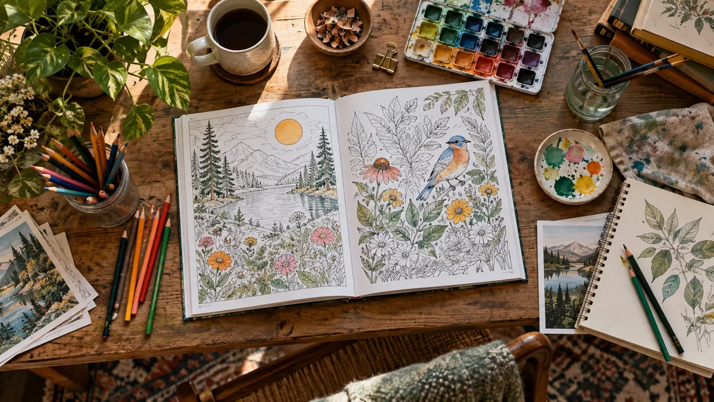

The Ultimate Coloring Tutorial for Your Adult Coloring Books
With the help of professional street artists and muralists, we created some of the best adult coloring books in the world.
Read more
Featured post
With the help of professional street artists and muralists, we created some of the best adult coloring books in the world.
Read moreAll posts
Showing all 8 posts
With the help of professional street artists and muralists, we created some of the best adult coloring books in the world.
Read moreDiego Orlandini in front of Pawn Price mural in the book Imagine the impact 150 of the best street artists could have in the world if they were to work together on a single cause? That’s the question illustrator and…
Read moreThe Ultimate Street Art Coloring Book – A Book with a Mission More than 150 of the best street artists in the world collaborated to create a series of premium coloring books for a social cause. Diego Orlandini, a writer…
Read moreIn today’s world, where we deal with constant change, bombarded with information, overworked, with little time for ourselves and… In today’s world, where we deal with constant change, bombarded with information, overworked, with little time for ourselves and to enjoy life, it’s no surprise so many of us deal with stress and anxiety. Many turn […]
Read morePopular Street Art from Around the World Makes Its Way to The Ultimate Street Art Coloring Book Street art and urban art have become increasingly popular in the last couple of decades. Urban art emerges from the city life, inspired…
Read moreStreet art and urban art is everywhere. It dresses cities and neighborhoods across the globe from New York City to Paris. It brings color, art, and culture, and gives voice to the communities in the works of hundreds of thousands of street artists and their murals. Writer turned illustrator Diego Orlandini, a Miami-resident and Wynwood […]
Read moreFallen Rose, a Miami-transplant, muralist and street artist based in Wynwood traveled to Cambodia and visited the same school…
Read moreOne of the reasons we launched Aimful Coloring Books is so that you and I could contribute to the…
Read moreNo posts in this category yet.